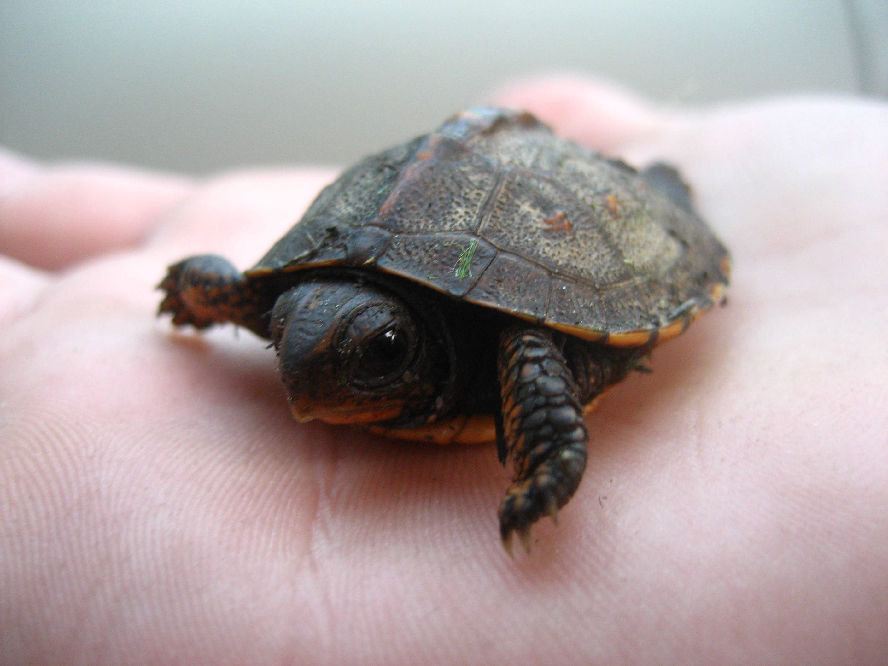

My Pets
Hover over the images!
I have three different pets, and they are all my favorite for different reasons. I feed them and give them water every day, and even though it's a lot of work, they are totally worth it.
Lula
Dog

Lula's been my dog for two years, and she's really fun to play with. I like to take her to the park. Her favorite toy is an old tennis ball.
Slowpoke
Turtle
Slowpoke is my turtle. I have had him for as long as I can remember, but he became mine for real when I turned 10 because I promised to take care of him.
Hamster
Fish

Hamster is the name of my fish. I named him hamster because I wanted a hamster and not a fish, but I like him anyway. He basically just swims around all day, but I still like him.